Mes jeux
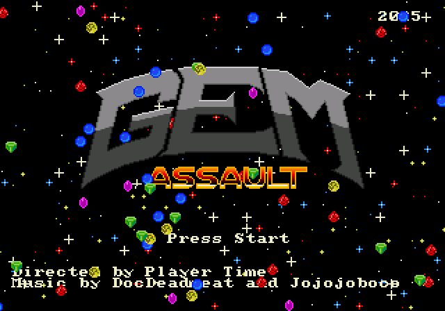
Gem Assault
Mon jeu Mega Drive, gratuit
Un jeu de gemmes en duel, créé avec SecondBASIC. Version pas encore finie, à télécharger gratuitement.
Mega DriveVersion en coursMis à jour le 18/10/2026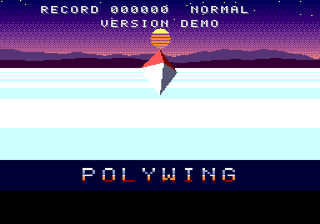
Polywing
Démo jouable
Un shoot 3D en polygones pleins pour Mega Drive, écrit en assembleur et tenant dans 1 Mo. Cette démo propose les trois premiers niveaux : la planète verte, une zone bonus dans l'espace et les dunes.
Mega DriveEn coursVersion Démo V02Mis à jour le 14/11/2026
Traductions et améliorations
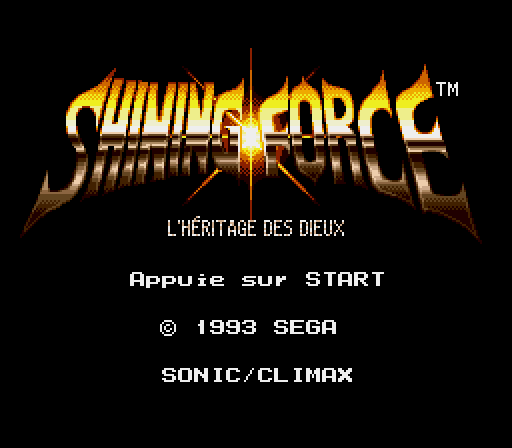
Shining Force
L'Héritage des Dieux
La traduction française complète du premier Shining Force, refaite depuis le texte japonais, avec les corrections du jeu d'origine.
Mega DriveTerminéeMis à jour le 18/10/2026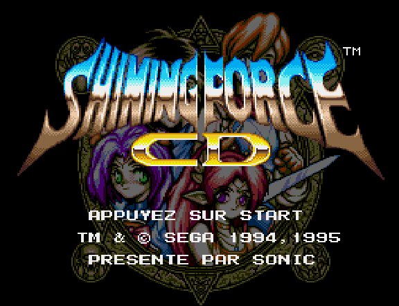
Shining Force CD
Les deux livres de Shining Force CD et leurs suites, traduits depuis le japonais, avec menus élargis et police accentuée.
Mega CDVersion de testMis à jour le 18/10/2026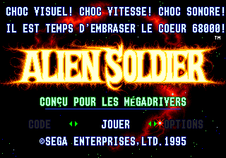
Alien Soldier
Traduction française
Traduction française complète du shoot'em up de Treasure, à partir de la version japonaise : intro, menus, armes, dialogues des boss, scènes d'histoire et génériques. ROM « world » qui démarre sur toutes les Mega Drive.
Mega DriveVersion de testVersion ASv05Mis à jour le 25/10/2026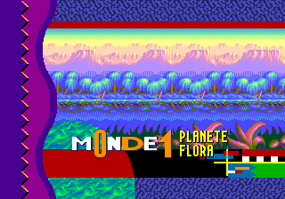
Ristar
Traduction française
Ristar, la petite étoile de Sega, entièrement en français : histoire, menus, codes secrets, Sound Theater et cartons de début de monde redessinés.
Mega DriveVersion de testVersion RISv07Mis à jour le 06/11/2026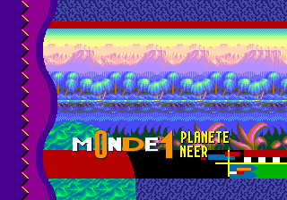
Ristar - The Shooting Star (version japonaise)
Traduction française
La version japonaise de Ristar, avec ses différences (planètes Neer, Leatow..., trésors nommés, fin et générique propres), entièrement en français.
Mega DriveVersion de testVersion RISJv07Mis à jour le 06/11/2026
Langrisser II
Traduction française
Traduction française du tactical-RPG Langrisser II, faite depuis la version japonaise. Dialogues, prologues, épilogues, scène de fin, menus, objets et saisie du nom : le jeu se joue de bout en bout en français, avec une police française fine pour loger le texte. ROM « world » qui démarre sur toutes les Mega Drive.
Mega DriveVersion de testVersion LAN2v06Mis à jour le 06/11/2026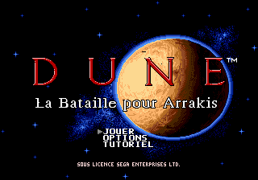
Dune : La Bataille pour Arrakis
Traduction française
Traduction française complète du jeu de stratégie de Westwood : Mentats, menus, panneau de construction, tutoriel, écrans de fin et voix françaises. ROM « world » qui démarre sur toutes les Mega Drive.
Mega DriveVersion de testVersion V10Mis à jour le 25/10/2026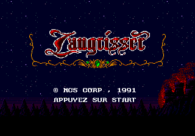
Langrisser
Traduction française
Traduction française complète du RPG tactique de NCS/Masaya, à partir de la version japonaise : dialogues, briefings, noms, objets, menus graphiques et logo. ROM « world » qui démarre sur toutes les Mega Drive.
Mega DriveVersion de testVersion LGRv02Mis à jour le 06/11/2026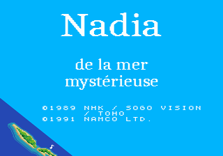
Nadia de la mer mystérieuse
Traduction française
Traduction française complète du jeu d'aventure Fushigi no Umi no Nadia (« Nadia, le secret de l'eau bleue »), faite depuis la version japonaise : dialogues, menus, objets, écrans d'intro, logo et mots de passe. Noms de la VF du dessin animé et ROM « world » qui démarre sur toutes les Mega Drive.
Mega DriveVersion de testVersion NADv06Mis à jour le 25/10/2026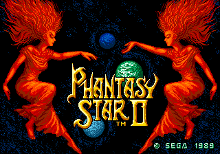
Phantasy Star II
Traduction française
Nouvelle traduction française complète de Phantasy Star II, faite depuis le texte japonais, avec les noms d'origine (Yushis, Rudger, Shilka...). Menus en français, icônes, course, options de difficulté, de couleurs et de musique et bugs d'origine corrigés.
Mega DriveEn coursVersion PS2v12Mis à jour le 06/11/2026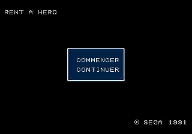
Rent A Hero
Traduction française
Traduction française complète de l'aventure comique de Sega, faite à partir de la version japonaise : dialogues, menus, objets, sound test et générique, avec les jeux de mots adaptés en français. ROM « world » qui démarre sur toutes les Mega Drive.
Mega DriveVersion de testVersion V14Mis à jour le 25/10/2026
Shining Force Résurrection
Traduction française et version enrichie
Shining Force entièrement traduit depuis le japonais, enrichi avec le contenu de la version GBA (Resurrection of the Dark Dragon) et les mécaniques de Shining Force II : nouveaux héros, cartes de Mawlock, combats, magies, Défis et New Game+. ROM de 3 Mo compatible avec une Mega Drive officielle.
Mega DriveEn coursVersion SFRv79Mis à jour le 06/11/2026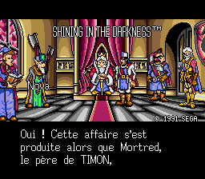
Shining in the Darkness
Traduction française
Traduction française complète du premier Shining, faite à partir de la version japonaise : dialogues, objets, monstres, magies, menus, enseignes et générique. Les noms japonais d'origine sont conservés.
Mega DriveVersion de testVersion SITDv22Mis à jour le 18/10/2026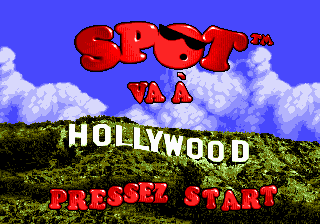
Spot Goes to Hollywood
Traduction française
Traduction française du jeu de plates-formes en 3D isométrique d'Eurocom : menus, cartons de niveau, bilan, test son, fin et générique, en gardant les clins d'œil au cinéma. ROM « world » qui démarre sur toutes les Mega Drive.
Mega DriveVersion de testVersion SPOTv04Mis à jour le 11/11/2026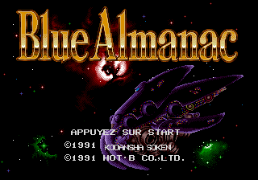
Blue Almanac (Star Odyssey)
Traduction française
Traduction française complète du RPG de science-fiction Blue Almanac de Hot-B (sorti en Occident sous le nom Star Odyssey), faite depuis la version japonaise : dialogues, menus, objets, monstres, intro et générique. ROM « world » qui démarre sur toutes les Mega Drive.
Mega DriveVersion de testVersion SOv01Mis à jour le 25/10/2026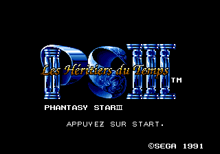
Phantasy Star III
Traduction française
Traduction française complète de Phantasy Star III, faite depuis le texte japonais (Toki no Keishousha), avec les noms d'origine (Kein, Marina, Myu, Shiren...). Répliques censurées en version américaine rétablies, écran titre « Les Héritiers du Temps », icônes, gains x1/x2/x4 et couleurs modernes au choix.
Mega DriveEn coursVersion PS3v04Mis à jour le 06/11/2026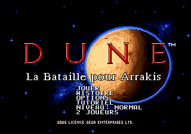
Dune : La Chronique d'Arrakis
Dune enrichi pour la Mega Drive d'origine
Dune FR enrichi des nouveautés du DuneHack Rebuild de Ti_, sur le moteur d'origine pour tourner à pleine vitesse sur une vraie Mega Drive : Fremen et Corrino jouables, nouvelles unités, et un mode Histoire de 39 missions qui raconte le livre en passant d'une Maison à l'autre.
Mega DriveEn coursVersion V94Mis à jour le 06/11/2026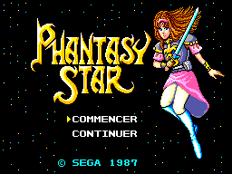
Phantasy Star
Traduction française
Traduction française du premier Phantasy Star, faite depuis la version japonaise « Fukkokuban » avec son FM : dialogues, cinématiques, menus, objets, monstres et écran titre. Noms japonais d'origine : Alisa, Myau, Tylon et Lutz.
Master SystemVersion de testVersion PSv06Mis à jour le 01/11/2026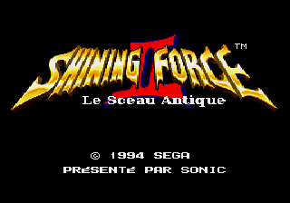
Shining Force II
Traduction française
Traduction française complète de Shining Force II, faite à partir du texte japonais et insérée dans la version américaine. Avec quelques corrections : bugs, difficulté, IA, sound test, et la ROM démarre sur une Mega Drive française.
Mega DriveTerminéeVersion SF2v17Mis à jour le 01/11/2026
Shining Force Gaiden : Final Conflict
Traduction française et adaptation Mega Drive
Le dernier Shining Force de la Game Gear, sorti seulement au Japon, traduit en français et rejoué dans le moteur de Shining Force II sur Mega Drive. Version de test : le jeu se joue du début à la fin, certaines cartes et musiques sont encore provisoires.
Mega DriveVersion de testVersion SFFCv31Mis à jour le 01/11/2026
Traductions de Marcoz
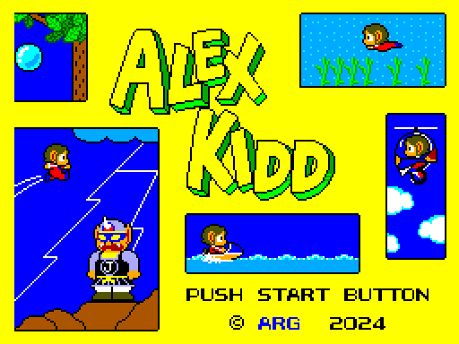
Alex Kidd in Miracle World – Extended Edition
Traduction française par Marcoz
La version étendue d'Alex Kidd in Miracle World, traduite en français par Marcoz.
Master SystemTerminéeTraduction : MarcozMis à jour le 25/10/2026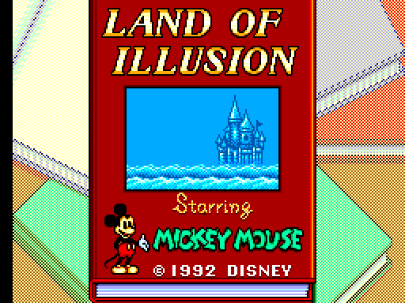
Mickey Mouse : Land of Illusion
Traduction française par Marcoz
Mickey se réveille dans un étrange village : toute l'histoire de Land of Illusion en français, par Marcoz.
Master SystemTerminéeTraduction : MarcozMis à jour le 25/10/2026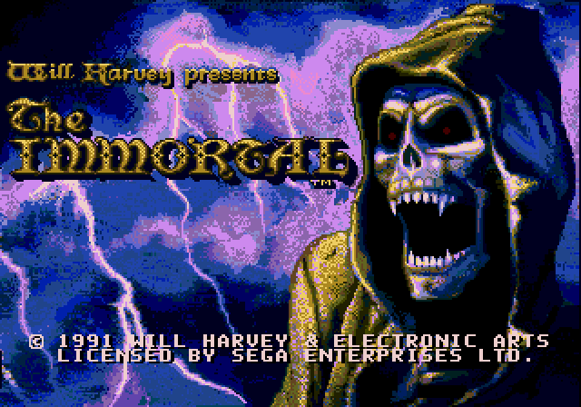
The Immortal
Traduction française par Marcoz
Le jeu d'aventure de Will Harvey traduit en français par Marcoz.
Mega DriveTerminéeTraduction : MarcozMis à jour le 25/10/2026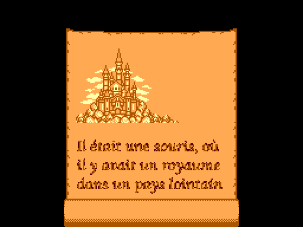
Mickey Mouse : Legend of Illusion
Traduction française par Marcoz
Mickey part chercher l'eau de vie pour sauver le royaume du roi Pete : l'aventure Master System traduite en français par Marcoz.
Master SystemTerminéeTraduction : MarcozMis à jour le 01/11/2026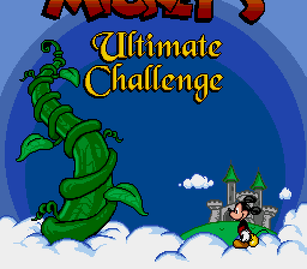
Mickey's Ultimate Challenge
Traduction française par Marcoz
Mickey et Minnie au royaume de Haricotville : les dialogues de ce jeu d'énigmes traduits en français par Marcoz.
Mega DriveTerminéeTraduction : MarcozMis à jour le 01/11/2026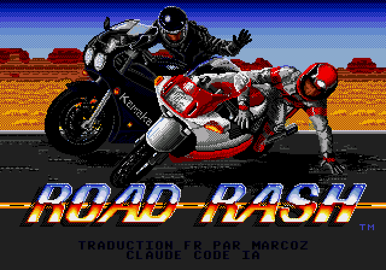
Road Rash
Traduction française par Marcoz
La course de motos d'Electronic Arts en français : menus, 155 dialogues, garage, distances en km et puissances en ch, par Marcoz.
Mega DriveTerminéeTraduction : MarcozMis à jour le 01/11/2026
Chargement des projets…